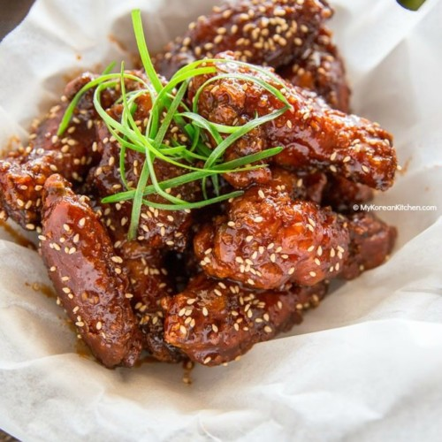

Korean Fried Chicken

Description
Ingredients
- 1 pound skinless, boneless chicken thighs, quartered
- ½ yellow onion, grated
- 4 cloves garlic, minced
- 1 teaspoon fine salt
- ½ teaspoon freshly ground black pepper
Other:
- 4 cups oil for frying, or as needed
Batter:
- ¾ cup cornstarch
- ½ cup self-rising flour
- 1 teaspoon white sugar
- ½ teaspoon ground black pepper
- ¼ teaspoon salt
- 1 cup very cold water, or as needed
Steps
- Make marinade: Stir together chicken, onion, garlic, salt, and pepper in a medium bowl until chicken is coated. Cover the bowl with plastic wrap and refrigerate, 4 hours to overnight.
- Heat oil in a deep fryer or large saucepan to 340 degrees F (171 degrees C).
- While oil is heating, make batter: Whisk together cornstarch, flour, sugar, pepper, and salt in a large bowl. Gradually whisk in cold water until mixture resembles smooth pancake batter. Use tongs to remove chicken from marinade to batter; stir to coat chicken completely. Discard marinade.
- Working in batches, fry chicken in hot oil for 4 minutes. Transfer chicken to a cooling rack.
- Increase oil temperature to 375 degrees F (190 degrees C).
- Working in batches, fry chicken again in hot oil until golden brown and crispy, 3 to 4 minutes. Transfer to a wire rack to drain.